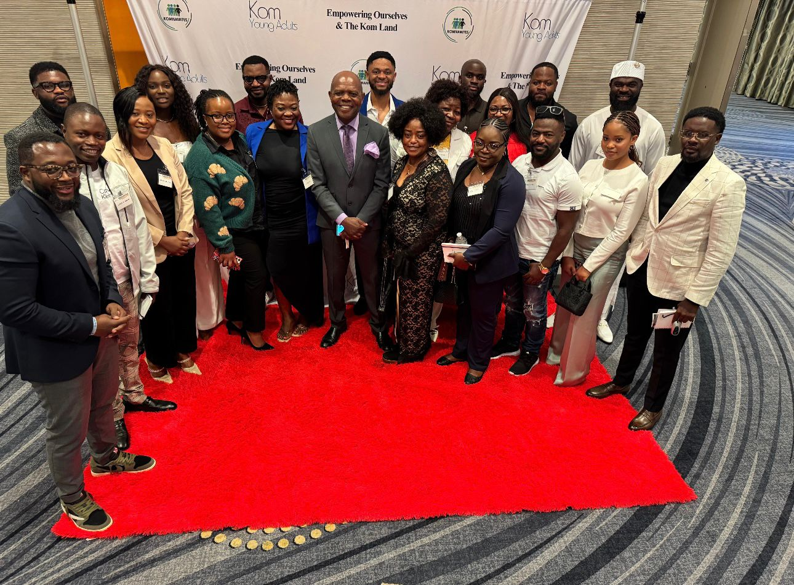
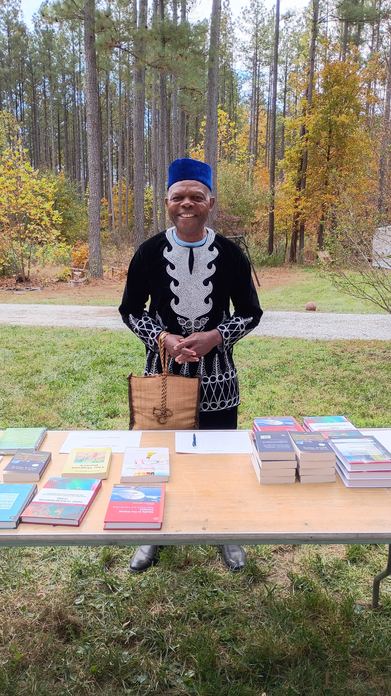
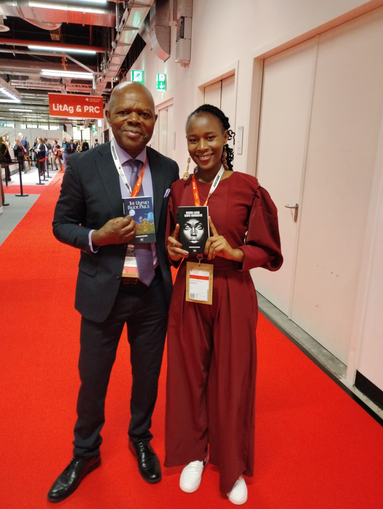
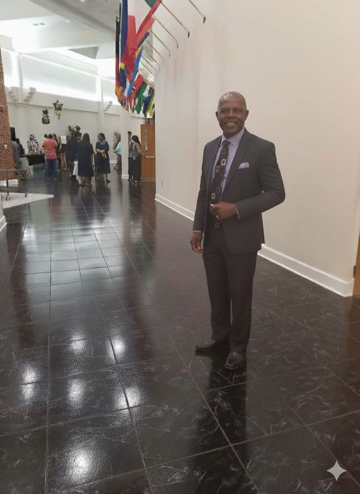
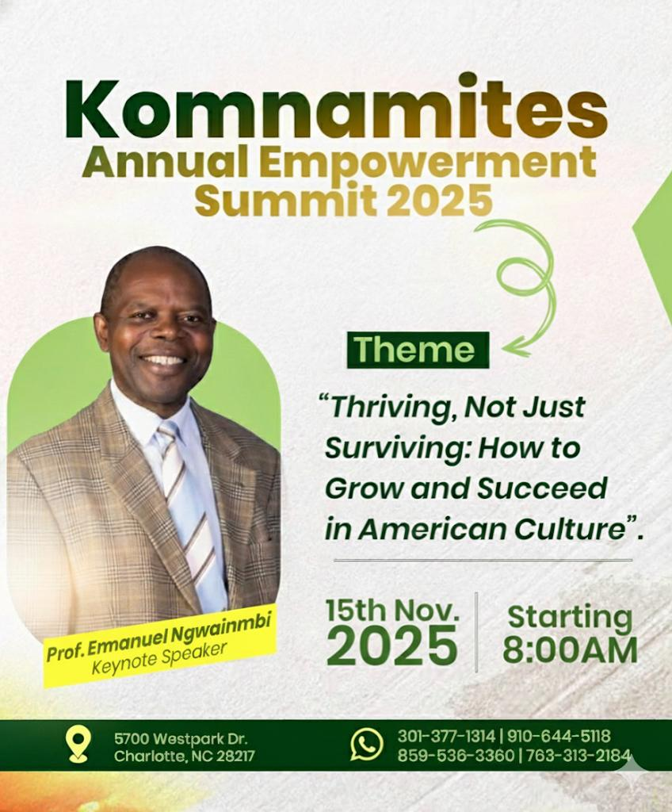
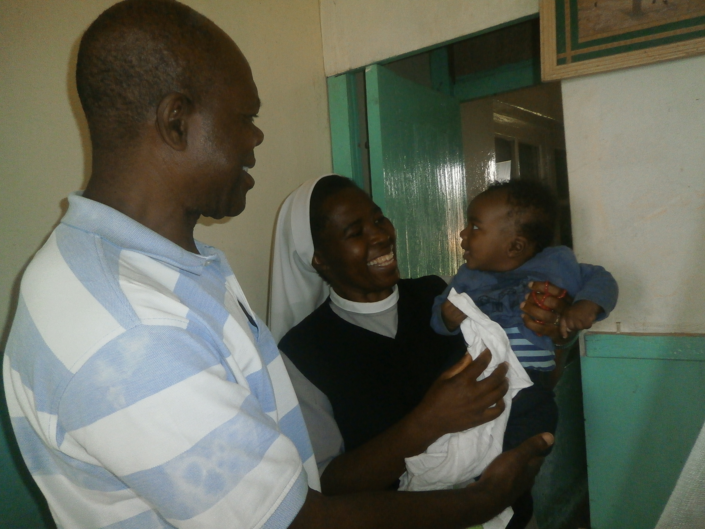
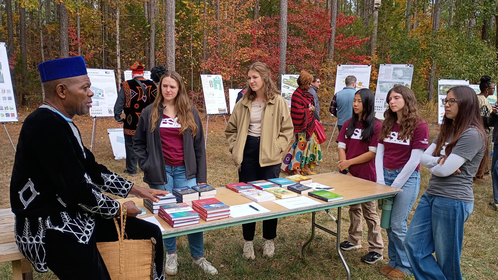

Keynotes · Literary Forums · Workshops · International Programs
Back to Home





Contributions to international cultural, educational, and policy-oriented programs.

Engagements on journalism, communication ethics, and global media narratives.
Engagements on journalism, communication ethics, and global media narratives.
Engagements on journalism, communication ethics, and global media narratives.